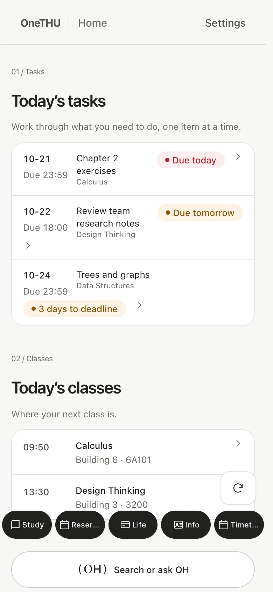
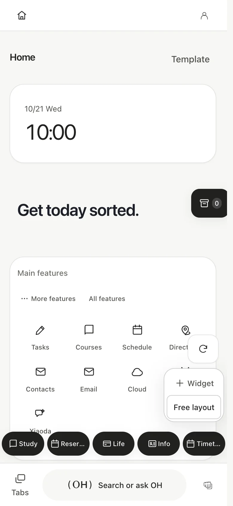
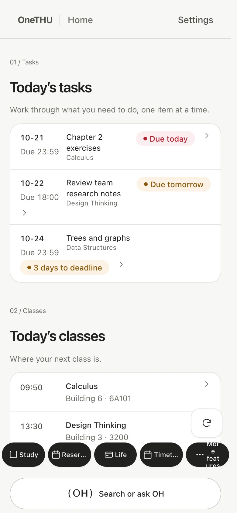
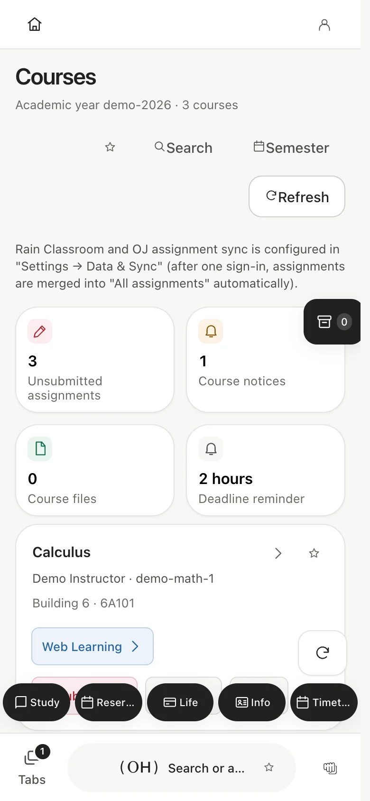
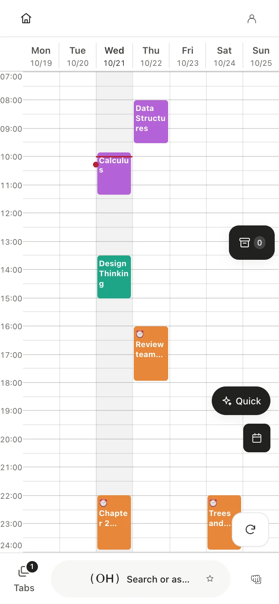
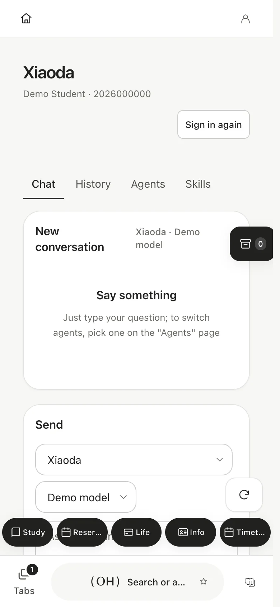
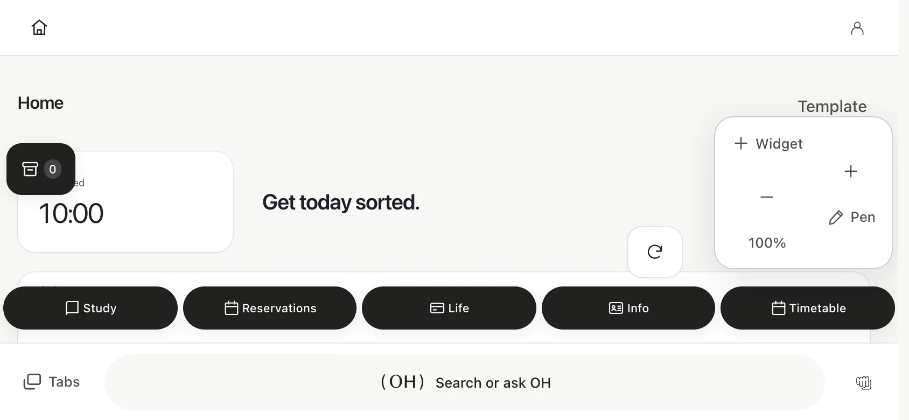
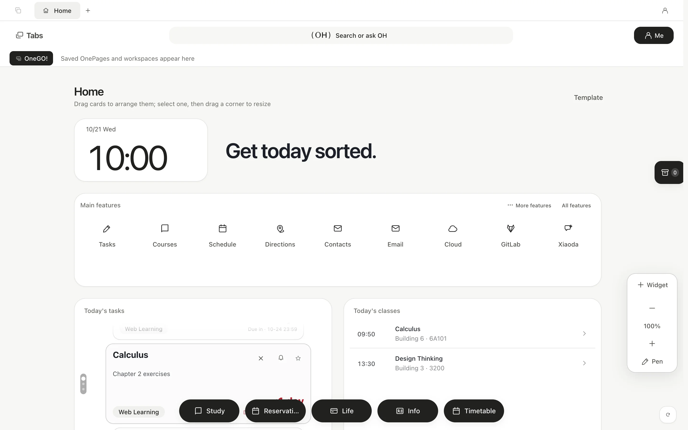

(One THU)
OneTHU 0.11 / Revolution
Your campus. In one place.
Study. Campus life. Your next idea.
Your themes. Your wallpapers. Your layout.
macOS · Windows · Android

Fictional data · Scroll to explore01 / YOUR PACE
Just enough. Or everything.
All three modes retain search and OH. Switching changes visibility while preserving your full-mode settings and data.

Full
Open up your whiteboard, tabs, OneGO, staging box, organizations, plugins and Xiaoda.
Compare modes02 / ONE PLACE
Find it. Then make it happen.
Unified search
Find features, campus services and integrated content from the OH capsule, then jump straight in.
Read moreOH · OneTHU Harness
In full mode, OH works with tools and plugins. Compact modes retain your own API and WeChat/Feishu connections. Actual permissions determine tool access.
Read moreXiaoda + lightweight skills
Explore Xiaoda agents and skills. Pure synchronous JavaScript runs in a bounded QuickJS runtime; heavier environments belong in your desktop agent.
Read more03 / HOLD. LIFT. KEEP.
Keep it here.
Take it further.
Hold an assignment, course file or whiteboard widget. Move it onto the highlighted staging-box button and release. Integrated tabs, workspaces, search results, events, cards, mail and cloud content are supported too.
Share with an online short code. NFC availability is currently unreliable; prefer short codes.
See supported items04 / ROOM TO WORK
Clear on a phone. Roomy on a desktop.
All images come from the app with fictional fixtures, without real user records. Screens show the Chinese UI; the app also supports other languages.




